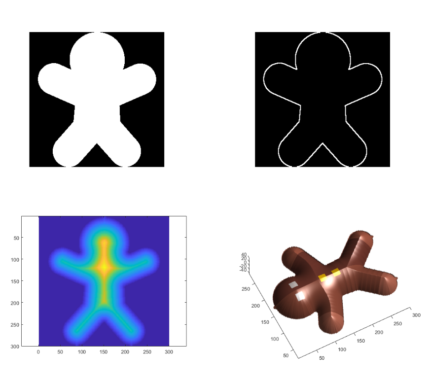
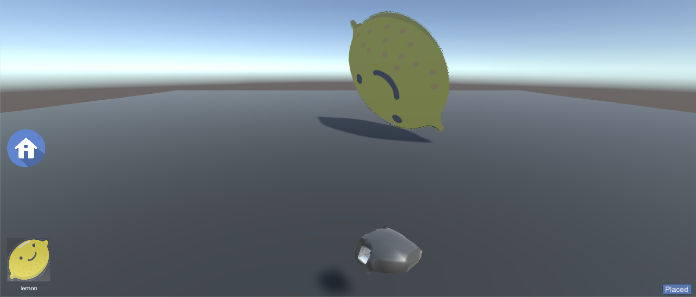
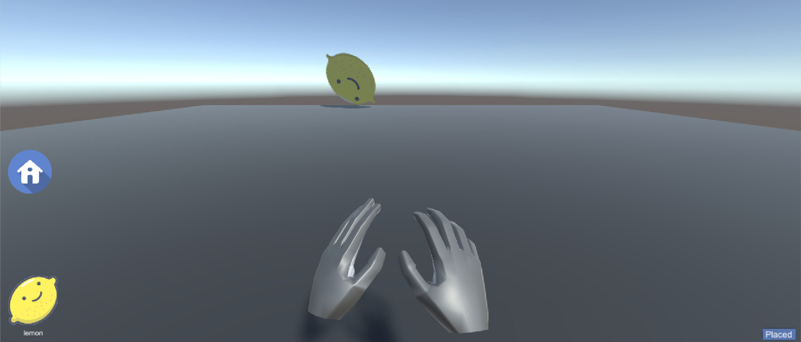

Product Design, Game Development, Augmented Reality
May - Aug 2019
3
Unity, C#, MATLAB, LeapMotion
Project Overview
Build A City is an interactive game developed by Team Spark for the client, Thinkingbox. The goal was to create an Out-Of-Home (OOH) installation that focused on using new and exciting technology for a unique user experience. This entailed imagining the installation for a particular public space (such as mall, airport, comic-con event, etc.) and pitching it as an on-site activation for a client and/or idea of our choice.
The Idea
The idea of the project was to create an interactive game that took real-world interactions of building with blocks and augment the experience to a virtual space. Each physical block represents a type of building which, when placed on a game board, appears as a virtual rendering of that building on screen. In this way, players can arrange blocks to create a city of their own. Players are encouraged to collaborate and build a sustainable city. After they submit their entry, they can view a 360 model of the city they just created and share it with others on social media.
Implementation
Image Processing
The first step involves resizing the image to a fixed height of 300px while preserving the aspect ratio of the image captured. This is ensures that model sizes are consistent across a scene and reduces the complexity of the mesh. We then proceed to extracting the outline of the image. We first convert the image from RGB color space to HSV color space and apply further image processing steps on the saturation channel. This is done as the saturation channel has the most sensitive visual content. To this, morphology close and open operations are applied followed by a dilation operation to fill up small gaps in the image and fetch only the boundary ignoring the outlines of elements contained within it such as eyes. Based on the boundary obtained, we use a flood fill operation to get use the region maps of the image. This helps us differentiate between the outside of the image (which we ignore while creating a depth map) and the inside (which ultimately forms our mesh).
Inflation

The images from left to right, top to bottom are the Region Map, Image Boundary, Depth Map and Final Result respectively.
The first step for mesh generation is to create a Euclidean distance transform of the obtained outline. For the areas outside the outline, we set the distance transform to zero. The distance values obtained currently have a linear variation and will result in a very sharp model if directly used. Thus we apply a circular smoothing function to them before further processing.
We plot this generated map twice as a point cloud surface to get the required mesh - once with their actual height values and next with height values as the additive inverse of the actual height used earlier. A MATLAB surface (comprising of two stitched sub-surfaces) is then elevated using the generated depth map to view the intermediate results. This surface is then texture mapped using our script which warps a 2D sketch image on top of it to create a texture mapped 3D MATLAB surface.
The output of this step is a texture mapped MATLAB surface plot which is later used for mesh generation and is exported as an \texttt{obj} to the mesh via the later described server-client setup. We have also added an extra component over the referred paper of by removing the bottom 30% height values. This is done to obtain a better join when combining the surface plot to get front and back faces of the model.
Mesh and obj generation
The texture mapped MATLAB surface plot obtained after the inflation step is then used to extract the vertex wise color values (since, the texture mapping was done in MATLAB using a custom script). We then convert the point cloud (structured) generated in the previous step into a mesh by selecting a set of four points forming a quad and then representing it as a set of triangles which are then simultaneously stored into the obj file - using our custom obj wrapping script. The final obj file also contains the vertex-wise colour values i.e. a bit more as compared to the contents of a standard obj. We later, in Unity write our own un-wrapping script to display these textured 3D-models.
Server Client Model
Since the inflation and mesh generation tasks are computationally heavy and can not be run on the client side always, we have made the system modular by separating the mesh generation and rendering parts. Mesh generation is done using MATLAB on a remote machine and the rendering will be done on a completely isolated machine (connected via internet). We here use two systems to demonstrate the aforementioned with of them acting as the server and the other one rendering the generated 3D model on Unity Engine.
LeapMotion

Rotate Gesture

Translate z (+ve) Gesture
We used a Leap Motion sensor to provide the functionality of using hand gestures to create a scene containing our generated 3D models. We have created different hand gestures corresponding to different transformations we can apply to the mesh. The gestures are implemented using the hand properties and detection utilities available in the Leap Motion Unity Package. Each gesture had to have a trigger so that the user can choose the transformation they want to apply directly using their hands, without having to use the GUI. The gestures we implemented as listed below: